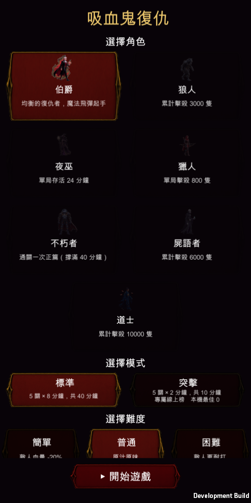
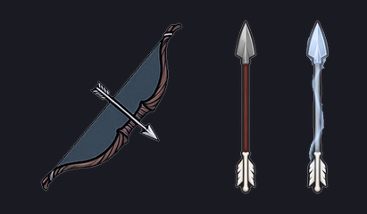

手搓廣告遊戲選集 · 吸血鬼復仇 · 修正
兩張寫死的清單沒跟著資料表加，而且完全不報錯。 我會漏掉是因為驗證都走 DebugSetCharacterJob，那支繞過了整個選單。 已補齊並加了兩道防線。獵魔弓改成真的射箭。
你只發現道士選不到。查下去發現這兩版 TestFlight 出去的內容有一半在遊戲裡碰不到：
| 東西 | 狀況 |
|---|---|
| 屍語者 | 選不到（build 44 就是了，不只道士） |
| 道士 | 選不到 |
| 亡者牧者 | 永遠不會被提供 |
| 月嚎將 | 永遠不會被提供 |
| 因果法師 | 永遠不會被提供 |
| 絕域獵手 | 永遠不會被提供 |
VrMenuScreen.CharacterOrder = { count, werewolf, witch, hunter, immortal } // 少 2 隻
VrDirector.JobOrder = { bloodlord, shadow, elementalist, bloodwarden } // 少 4 個
資料表裡有 7 隻角色、8 個職業，但選單與轉職流程各自照一張寫死的清單跑。 清單是為了順序穩定（Dictionary 走訪順序不保證），代價是漏掉的東西完全不報錯 ——它只是不存在。
你上次提醒過選單寫死座標會撞版。座標那一塊沒事（之前改成捲動版之後 全部從一個游標推導，加到 7 隻自動排成 4 列）。出事的是清單本身。
所有驗證都走 DebugSetCharacterJob("taoist", ...)——那支直接設定角色，
繞過整個選單與轉職流程。所以資料驗證全綠、實機探針全綠、
上了兩版 TestFlight，而玩家連選都選不到。
這正是 CLAUDE.md 驗證規則第 1 條在講的事，而我整場都在引用它。
VerifyOrderTables() / VerifyJobOrder() 每次啟動比對資料表，
漏了直接 LogErrorVR_ONLY=menus 現在會把畫面上找得到的角色列出來實機（走真實選單）：
[選單] 角色清單自檢：資料表 7 隻、選單列出 7 隻
[轉職] 職業清單自檢：資料表 8 個、順序表列出 8 個
[CHIP] 選角畫面上找得到的角色：7/7
伯爵 ✓ 狼人 ✓ 夜巫 ✓ 獵人 ✓ 屍語者 ✓ 道士 ✓ 不朽者 ✓

道士在最後一列置中（單數張時最後一張置中的邏輯本來就有），版面沒有撞到。
投射家族一律拿武器圖示當彈丸：
dir.SpawnShot(..., VrIconArt.SpriteOf(s.Id), ...)
對飛刀（一把刀）、魔法飛彈（一顆球）、血蝠群（一隻蝙蝠）都對， 但獵魔弓的圖示是一把弓——所以飛出去的就是弓。
B（浮空弓自動射擊）不能做，理由不是難度是設計：獵魔弓的整個機制是 「傷害隨箭從發射點飛了多遠遞增」，而發射點就是玩家。做成固定在半空的砲台， 發射點就變成那把弓——玩家站哪裡不再影響傷害，「站遠才強」這個獵人的識別 會整個消失。那條路線的數值（每 100px +22%、近身 ×0.45、瞄準上限 402px） 是為「玩家自己的位置」調的。
所以加了 WeaponDef.ShotIcon：彈丸可以指定自己的圖，沒指定就沿用武器圖示
（既有 10 把投射武器一個字都沒改）。

左邊是武器圖示（原本被拿去當彈丸的那張），中間是獵魔弓現在射的銀箭， 右邊是暴風之眼的光箭。$0.20。
獵魔弓的彈丸圖 = arrow ✓ 射的是箭
暴風之眼的彈丸圖 = arrow_storm ✓
遠/近 = 3.27 倍（設計 ≈3.2） ✓ 機制沒被動到
老實說一件事：我拍了一張飛行中的截圖但沒拍到箭（快門時機沒對上， 箭已經命中了）。所以這一項的證據是「彈丸貼圖確實換成箭矢圖、而且載得到」， 不是「我看到箭飛過去」。你重測時會第一眼就看到。
VrMinion 已經有：生成、跟隨玩家、牽引繩、追敵人、接觸傷害、
還有「跑玩家的主武器」（走 VrWeapons + IDamageSink）。
分身要的東西幾乎就是這些。
真正新的只有一件事：分身要能替玩家擋傷害。 兩種做法：
| 做法 | 成本 | 手感 |
|---|---|---|
| 替身：玩家將要受傷時，附近有分身就由它代替消失 | 低——傷害有單一入口（HurtBy），一個 hook |
讀得非常清楚：「分身替你擋了一刀」 |
| 嘲諷：敵人改成追分身 | 高——要改敵人的移動目標，每一隻都會受影響 | 比較自然但風險大很多 |
我會選替身。 而且它剛好給了忍者一個沒人佔的軸： 現有五個是反應式／數量／狀態／空間／時機，忍者是轉嫁—— 把本來要落在你身上的東西丟給別人。
ApplyWraithLook 已經是這個做法。忍者跟屍語者都是「召喚」，定位很容易撞。要分開的話： 屍語者是輸出（軍隊幫你打）、忍者是防禦（分身幫你死）。 如果忍者的分身也打得很痛，那就只是「屍語者但比較快」。
先評估到這裡，之後要細談再說。
還沒出新的 TestFlight。 要我出 build 46 說一聲——這兩個都是擋住測試的 bug， 我建議出。
→ 上一頁：道士完成報告